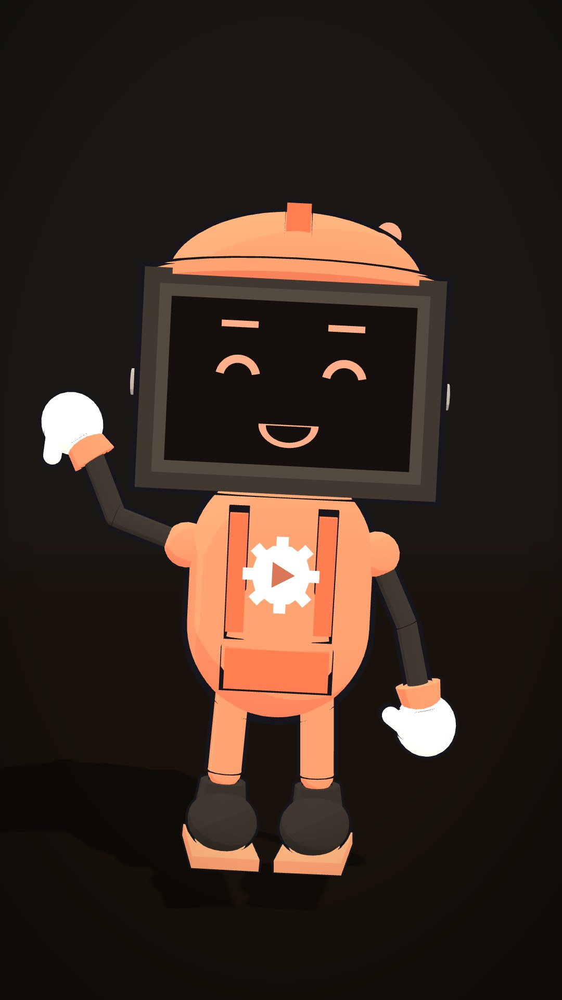

Nasceu de um canal de verdade, que posta sozinho.
A Fábrica de Canais começou como um projeto pessoal: um canal de curiosidades de futebol em animação 3D, o Boleiro 3D. A meta era simples e difícil ao mesmo tempo: postar todos os dias, nas três redes, sem depender de gravar, editar e lembrar de publicar.
Em vez de contratar uma equipe, construímos uma. Uma linha de produção que pesquisa os fatos, escreve o roteiro, narra, anima, revisa quadro a quadro e agenda os vídeos. Depois de pronta, o trabalho passou a ser deixar o computador ligado.
Depois percebemos que a mesma estrutura funcionava em psicologia, finanças, ciência ou saúde. Assim nasceu a marca Fábrica de Canais: uma produtora que cria e opera canais com constância, em qualquer assunto que possa ser explicado com fatos. Acompanhe os bastidores no Instagram, em @afabricadecanais.
Arthur Ronaldo da Silva, criador da Fábrica de Canais. Desenvolvedor criativo de projetos, palestrante e arquiteto de experiências.

Quer ver a Fábrica funcionando?
Assista aos vídeos que ela criou em 5 nichos diferentes.
Ver exemplos →